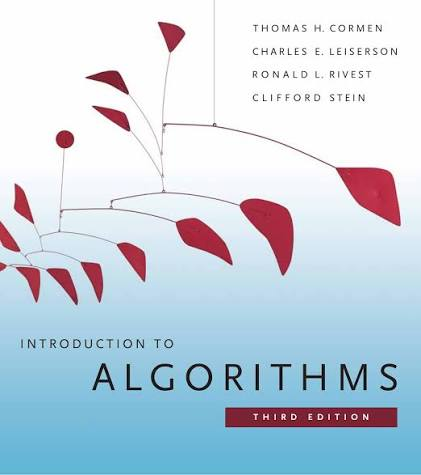

Introduction to Algorithms (CLRS), 3rd editionCormen, Leiserson, Rivest and Stein
Try: Exercise 3.1-1 (max(f, g) = Θ(f + g)) and Exercise 3.1-4 (2n + 1 and 22n). More practice is in the separate handout.